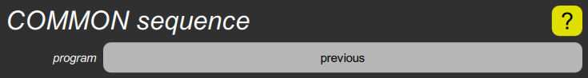

COMMON sequence cluster

This displays the sequence program parameter, which determines which new program will be selected when the Sequence Program footswitch is pressed. The program button can only reset it to its default value of “previous” by long-pressing it. This makes the footswitch revert to the previously selected program, including any unsaved edits. This parameter can only be set to an actual program by using the Program popup from the Programs screen.
Note that the program number shown before the name may be either a 1- or 2-digit number to sequence to the program in the same bank as the current program, or a 3-digit number to sequence to a specific bank. The difference is significant if the current program is ever moved to a different bank.